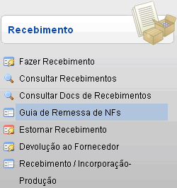
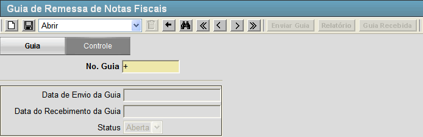
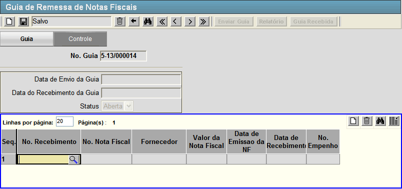
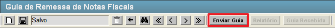
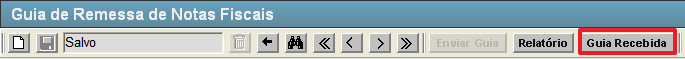

Guia de Remessa de NFs [ Voltar ]Esta tela permite o usuário gerar guias de remessa de Notas Fiscais.Para acessá-lo, vá ao menu "Recebimento - Recebimento" da tela inicial e clique em "Guia de Remessa de NFs". 
Ao clicar no menu, a seguinte tela será exibida: 
Execute os passos abaixo para gerar a guia de remessa: 1º Passo: clique no botão  [Salvar]. Após clicar no botão "Salvar" aparecerá uma grade na tela conforme a imagem a seguir. [Salvar]. Após clicar no botão "Salvar" aparecerá uma grade na tela conforme a imagem a seguir. 2° Passo: selecione o código de recebimento referente a guia de remessa. Clique no botão  [Pesquisar] para selecioná-lo a partir de uma listagem contendo todos os recebimentos cadastrados. [Pesquisar] para selecioná-lo a partir de uma listagem contendo todos os recebimentos cadastrados. 3º Passo: depois de selecionar o recebimento clique no botão [Salvar] para armazenar as informações. Após salvar as informações o botão [Enviar Guia] estará disponível. Ver imagem abaixo. Clique neste botão para efetivar o envio da guia. 4º Passo: clique no botão [Enviar Guia]. Após salvar as informações o botão [Guia Recebida] estará disponível.  Para finalizar o fluxo da tela clique neste botão e será confirmado o recebimento da guia. Caso queira imprimir o relatório da guia clique no botão  [Relatório]. [Relatório]. |